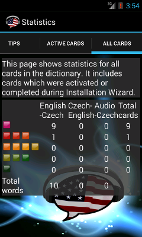

Statistiky
Stránka statistik obsahuje souhrnná data z Vašeho učení a pár tipů na lepší využití aplikace.
Barevné čtverečky zobrazují jak dlouho se budete slovíčko učit a zároveň je to ohodnocení znalosti daného termínu (viz. sekce proficiency). Barva se mění po každém zobrazení kartičky v rámci aktivity Review. Životní cyklus kartičky má tři fáze (EN, CS, audio only) a po dosažení zeleného hodnocení se ukončí jedna fáze učení a začne zobrazovat další fáze v sekvenci. Standardně se učíte první kartičku anglický termín a jeho překlad (Anglicko>Česká kartička). Po naučení této kartičky (zelený čtverec) se pro tuto kartičku začne zobrazovat překlad a musíte doplnit český význam (Česko>Anglická kartička). Analogicky po dokončení druhé úrovně se naučíte poslední úroveň, kterou je rozpoznání významu na základě výslovnosti (Audio kartička).
Červeně označené kartičky jsou obvykle termíny které zatím neznáte a trvá obvykle 5 Review cvičení než červené hodnocení změní na zelené.